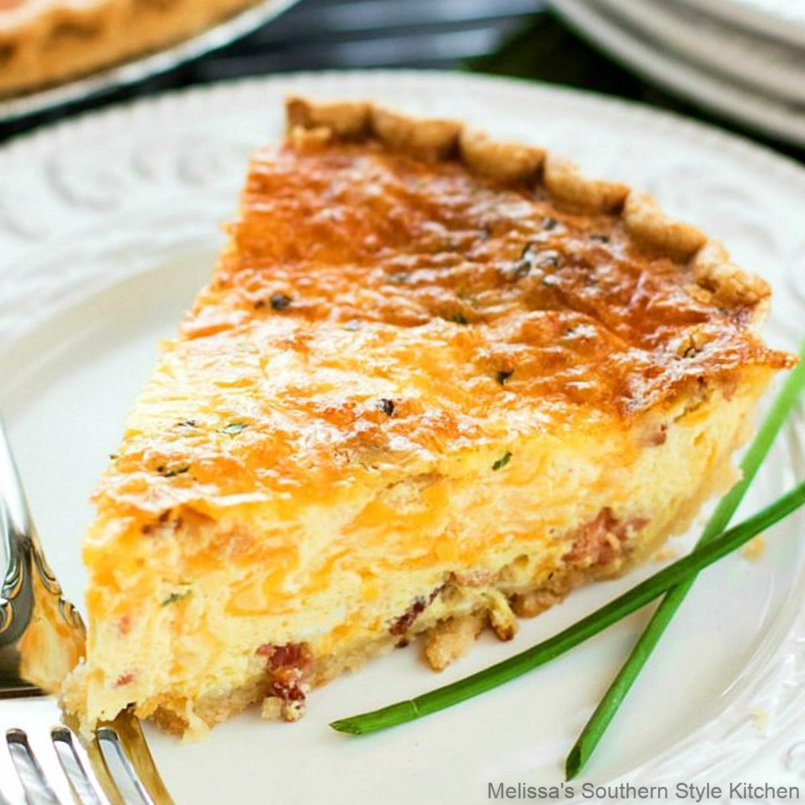

Cheddar and Chive Quiche

This cheesy quiche is easy to make and sure to please!
Ingredients
- Premade piecrust
- 5 eggs
- 2 cups half and half
- 1/2 tsp salt
- 4 oz grated cheddar cheese
- 3 TBL finely chopped chives
Steps
- Preheat oven to 350 degrees
- Line 9-inch pie plate with pie crust. Fill with pie weights and par bake for until lightly golden, about 20 mintues.
- Whisk eggs, half and half, and salt together until homogeonous
- Sprinkle cheese chives into warm or cooled pie crust
- Pour egg mixture into pie crust
- Bake until center of quiche reaches 160 degrees, about 50-60 minutes